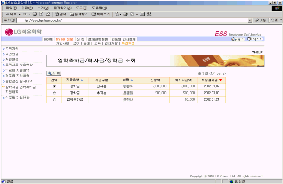
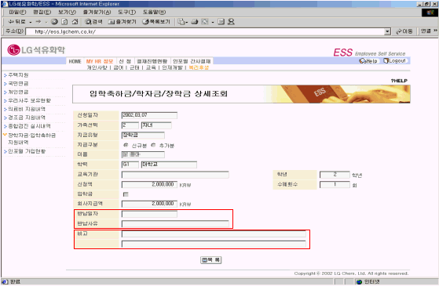

| Ⅱ. 화면사용법 및 유의사항 |
| <그림 1. 장학자금·입학축하금 지원내역 목록 화면> |
|  |
| |
| 1) 각항목을 선택하여 조회버튼을 누르면 장학자금·입학축하금을 지원받은 상세내역을 조회할 수 있다. |
| |
| <그림 2. 장학자금·입학축하금 지원내역 상세조회 화면> |
|  |
| |
| 1) 지급액 : 본인이 신청한 금액에 대해 회사에서 최종 지원해 준 금액이다. |
| 2) 반납일자, 반납사유 : 장학금 반납사유가 발생하여 회사에서 지원받은 장학금을 반납한 경우의 |
| 반납일자와 사유이다. |
| 3) 비고 : 개인의 신청금액에 대해 회사에서 지원해 주는 금액이 다를 경우 장학자금 담당자가 입력한 |
| 사유를 보여준다. |
| |